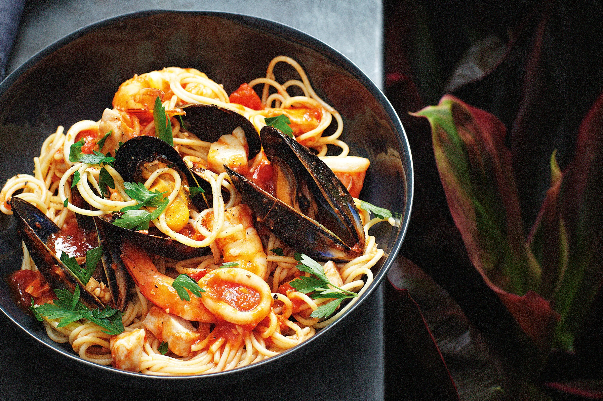

Homepage
Seafood Marinara

Description
Seafood Marinara is a pasta dish which includes a combination of different seafoods such as prawns, mussels, slices of calamari and pieces of fish.
Ingredients
- 180g dried sphaghetti pasta
- 2 1/2 tbsp olive oil
- 300g seafood Marinara mix
- 2 garlic cloves
- 1/2 onion
- 1/2 cup white wine
- 2 cups tomato passata/tomato puree
- 1/2 tsp sugar
- 2 tbsp finely chopped fresh parsley
Steps
- Bring a large pot of salted water to boil. Cook pasta accroding to packet directions, but reduce the cooking time by 1 minute (because the pasta will finish cooking in the sauce). RESERVE 1 mug of pasta water, then drain the pasta.
- Separate the seafood mix based on cook time.
- Longest cook time: fish and medium / large prawns
- Medium cook time: small prawns
- Shortest cook time: calamari
- Heat 1 1/2 tbsp oil in a large skillet over high heat. Add fish and large prawns first, cook for 30 seconds. Add small prawns, cook for 30 seconds. Add calamari, cook for 1 minute. Immediately transfer everything to a bowl.
- Reduce heat to medium high. Heat remaining 1 tbsp oil, then add garlic and onion. Cook for 3 minutes until onion is translucent.
- Add wine and bring to simmer, scraping the bottom of the skillet to mix the brown bits into the liquid. Simmer for 1 minute or until alcohol smell has evaporated.
- Add tomato passata, sugar, salt & pepper. Low heat to medium high, bring to simmer and cook for 2 minutes. Adjust salt and pepper to taste.
- Add pasta, seafood, around 1/2 cup of reserved pasta cooking water inot the sauce. Toss gently and cook for 1 to 2 minutes or until the sauce has thickened and coats the pasta.
- Serve, garnished with fresh parsley.